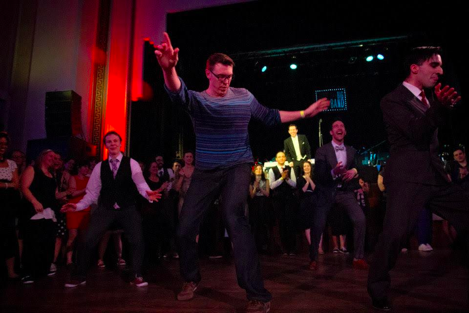

Emcee — Lindsay Longstreth

Lindsay has been making fake microphones and forcing her mom to listen to mildly funny jokes since she was three years old. Since then, she has used real microphones to inform, teach, and entertain a wide range of audiences. In 2013 she hit the Jazz Dance Event Emcee Circuit (which is totally a real thing) at Atlanta Varsity Showdown and never looked back, working events such as Midwest Lindy Fest (MN), KLX (TN), MCX (TN), Rocktober (OH), and Whistlestop (IN). With over 14 years of Lindy Hop under her Keds, Lindsay loves the people, music, and culture of vintage jazz dance, and is thrilled to be the Master of Ceremonies at your event.
Instructors
Bobby White
Bobby White is known worldwide for his individual dance style,
expressive teaching methods, and floppy hair.
He is a passionate dancer of Balboa...
Bobby White
Bobby White is known worldwide for his individual dance style,
expressive teaching methods, and floppy hair.
He is a passionate dancer of Balboa, Lindy Hop, and Solo Jazz and has
won many national and international championship placements in those
dances, which he teaches all over the world. His welcoming nature
and humorous personality are complemented by his passion for the
dance and in-depth instruction.
He is dedicated to exploring the art form and history of swing dance,
as shown through his well-read blog, Swungover,
and the story-telling talks that he delivers at events. He is the
emcee of Lindy Focus and other events.
Kate Hedin
Following in the path of her great ancestor, Swedish explorer Sven Hedin, Kate has traveled to the greatest unknown regions of following and footwork...
Kate Hedin
Following in the path of her great ancestor, Swedish explorer Sven
Hedin, Kate has traveled to the greatest unknown regions of following
and footwork. Aside from a love of classically inspired Lindy Hop,
she is most known for her unique and elegant style of Balboa.
The result is an impressive resume. Kate holds championship titles
in almost every major competition, including the American Classic
Balboa Championships, the International Lindy Hop Championships, the
Euro Balboa Cup, and more. She is also a highly sought-after competition
judge. In 2012, she released two highly praised DVDs specifically for
Balboa followers on technique and aesthetics. As a teacher, Kate is
known and loved for her logic-based language, her unique methods of
teaching technique, and, overall, never leaving student followers
disappointed.
She is proud to have held, along with her friends at Get Hep Swing
in Cleveland, the Guinness World Record for longest dance party ever
(52 hours, 3 minutes). Her fashion is admired by many, her lines
desired as far as the Orient. She also does trapeze.
Peter Strom
Since his start in 1998 Peter has taught at dance camps from Australia to South Korea to Herrang, Sweden. In addition to teaching he brings with him his skills as a sought after DJ and experienced Master of...
Peter Strom
Since his start in 1998 Peter has taught at dance camps from Australia to South Korea to Herrang, Sweden. In addition to teaching he brings with him his skills as a sought after DJ and experienced Master of Ceremonies. He is currently a member of the renowned team the Silver Shadows and the founder of Uptown Swing in his hometown of Minneapolis, Minnesota.
Michael and Evita
Michael Jagger and Evita Arce are International Lindy Hop dancers and teachers based in New York City. They bring an exuberant energy and joy to...
Michael and Evita
Michael Jagger and Evita Arce are International Lindy Hop dancers and teachers
based in New York City. They bring an exuberant energy and joy to
every project. Their combined resumes span the globe, together having
performed on prestigious stages and dancing with Philharmonic
Orchestras, touring with Broadway shows, working with Jazz at Lincoln
Center plus appearances on, “So You Think You Can Dance.” Michael and
Evita have worked together for over 10 years and have been dancing Lindy
Hop for 17 years.
Michael and Evita developed a home teaching regular classes at Dance
Manhattan, New York City’s most recognized school for social dance
(2005 – 2014).
Currently, the two teach pop up workshops all over the world and
produce performance material for
Syncopated City Dance Company.
As dance teachers, Michael and Evita emphasize the understanding of
anatomy and efficient use of the body. Connecting movements through
elegant flow, clearly projecting direction within the body, and
romantic personal interactions are what create their lead and follow
technique. Above all other descriptions, one will surely say that
Michael and Evita are inspiring to watch and possess a warm welcome
to any student of Lindy Hop. You can enjoy more of their instruction
by subscribing to their mailing list at
MICHAELANDEVITA.COM
Jenny Snowden
Jenny Sowden is an award winning, full-time, international dance instructor based in New York City where she is the managing director of Brooklyn Swings and...
Jenny Snowden
Jenny Sowden is an award winning, full-time, international dance instructor based in New York City where she is the managing director of Brooklyn Swings and nycBABBLE.com. Jenny has been training in dance for over 25 years and teaching for over 20 years, with a BA in Dance and Theater from San Diego State University. She has studied 34 different styles of movement including Ballet, Tap, Hip Hop, West African, Capoeira, Aikido, Tango, Salsa, Lindy hop, Balboa, and Blues. Her background influences her teaching and general style through musicality, variety, expression and an understanding of body mechanics. Jenny believes the dance floor is a ‘World of Yes,’ where by constantly accepting and being inspired by what happens, creates an amazing place to be. We then take classes in a ‘World of Intention’ to expand our ‘World of Yes.’ Find out more at JennySowden.com.
Dan Repsch
Dan is immersed in the music and the movement. He constantly travels to continue learning, happily sharing his ideas along the way. In his teaching, Dan’s...
Dan Repsch
Dan is immersed in the music and the movement. He constantly travels to continue learning, happily sharing his ideas along the way. In his teaching, Dan’s enthusiastic approach brings a focus on innovation, connection, and attention to your partner. Dan is also a veteran DJ, spinning for events across the continent and locally on a weekly basis, and has dabbled in organizing for events and local dances. In the end, Dan is most excited to push his dancing and to see his students break through their boundaries.
Dave and Kerry
Since his first swingout Dave has developed what some call an unhealthy obsession with swing dancing. From day one, his Lindy hop foundation was built by...
Dave and Kerry
Since his first swingout Dave Deenik has developed what some call an
unhealthy obsession with swing dancing. From day one, his Lindy hop
foundation was built by traveling all over the Midwest and even across
the country learning from the best instructors the international
scene has to offer. Dave started teaching for his hometown scene
Naptown Stomp in 2013. He loves to see beginners nail their first
swingout, and his enthusiasm for dancing is contagious.
Dave is also a big fan and promoter of St. Louis Shag and is considered
to be one of the strongest shag dancers in the Midwest. You may have
seen him in shag competitions and performances at events like The
Nevermore Jazz Ball, Southern Swing Challenge, Lindy Focus, and more.
Ask him to dance wherever you find him!
Kerry Kapaku comes from a long history of training, performing,
and teaching ballet and contemporary dance, and has been dancing
since she was just four years old. Kerry was introduced to Lindy
Hop while in college (studying dance!) at The Ohio State University,
and has been hooked ever since. She is addicted to the joy of the
dance, and brings that enthusiasm into every class she teaches,
whether she’s teaching to a large group or a doing a one-on-one
private lesson. Since 2012 Kerry has taught for The Ohio State University
Swing Dance Club, SwingColumbus, and Naptown Stomp. Over the past few years,
Kerry has competed in several lindy hop and St. Louis Shag competitions
around the Midwest area and has placed at events such as Dayton Swing
Smackdown, Lindy on the Rocks, SwingIN, Nevermore Jazz Ball, and
Southern Swing Challenge. Kerry currently dances and teaches ballet
professionally in the Indianapolis area. Kerry’s passion for teaching
is evident in all of her classes, and she aims to cultivate a fun
and encouraging atmosphere for her students.